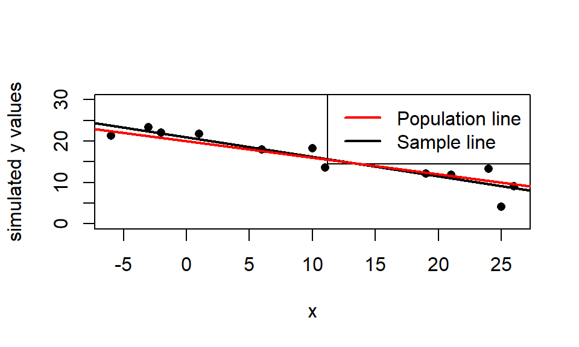
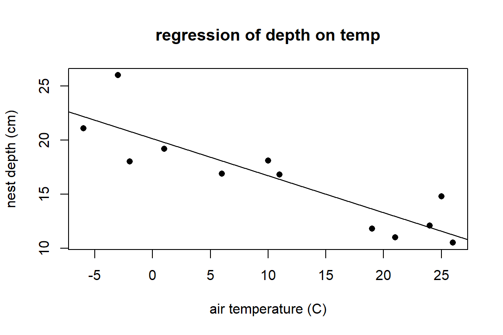
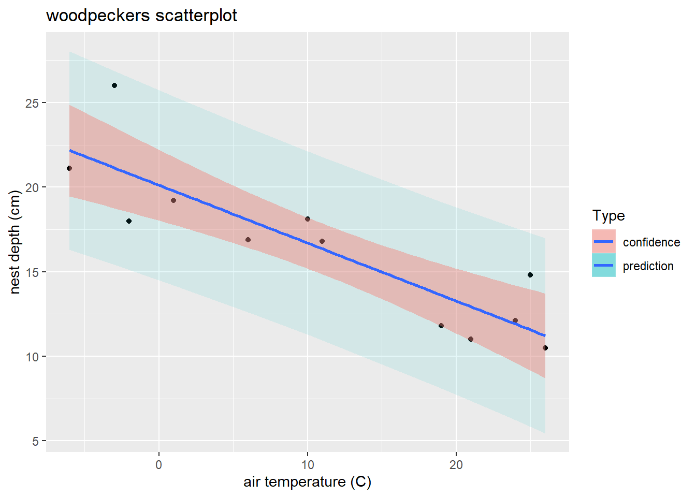
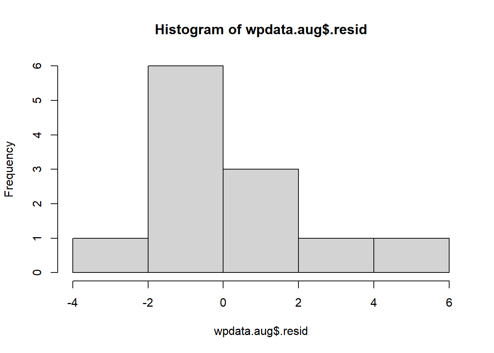

Chapter 2 Simple Linear Regression
This chapter contains content from Sleuth Chapters 7 and 8.
2.1 The variables
Suppose we have a quantitative response variable \(y\) that we want to relate to an explantory (aka predictor) variable \(x\). For now, we will assume that \(x\) is also quantitative.
2.2 The model form
This section describes the SLR model for a particular population of interest. Another way to frame the model is that it describes a hypothetical data generating process (DGP) that was used to generate the sample of data that we have on hand.
Let \(Y_i\) be the response from unit \(i\) that has explanatory (aka predictor) value \(x_i\). There are two equivalent ways to express the SLR model for \(Y\):
Conditional normal model: Given a value \(x_i\), the response \(Y_i\) follows a normal model with mean and SD given below: \[ Y_i \mid x_i \sim N(\mu_{y\mid x} = \beta_0 + \beta_1 x_i, \sigma) \]
- Mean + error: Statisticians are more likely to use a model specification that expresses \(Y\) as a function of the expected value/mean of \(Y\) plus an error term that models variation in responses around the mean: \[\begin{equation} Y_i = \beta_0 + \beta_1 x_i + \epsilon_i \ \ \ \ \ \epsilon_i \sim N(0, \sigma) \end{equation}\]
Both expressions of the SLR model above say the same thing:
- Linear Mean: \(\mu_{y\mid x} = E(Y \mid x) = \beta_0 + \beta_1 x\) describes the population mean value of \(Y\) given a predictor value \(x\). This mean value varies linearly with \(x\) and the population parameters are \(\beta_0\) and \(\beta_1\).
- Constant SD: \(SD(Y\mid x)=\sigma\) describes the SD of \(Y\)’s in the population around a given mean value \(\mu_{y\mid x}\). The fact that this SD does not depend on the value of \(x\) is called the contant variance, or homoscedastic, assumption.
- Normality: The shape of population response values around \(\mu_{y\mid x}\) is described by a normal distribution model.
Finally, one last assumption is made for the SLR model:
- Indepedence: Given a predictor value of \(x\), all responses \(Y\) occur independently of each other.
There are a total of three parameters in the SLR model:
- the two mean parameters \(\beta_0\) and \(\beta_1\)
- the SD parameter \(\sigma\)
2.2.1 Interpretation
For a SLR model:
- \(\beta_0\) is the mean response when the predictor value is 0 since \(\mu_{y \mid 0} = \beta_0 + \beta_1(0) = \beta_0\).
- \(\beta_1\) tells us how the mean response changes for a one unit increase in \(x\)
2.2.2 Example: Woodpecker nests
We want to model nest depth (cm) in a tree cavity as a function of ambient air temperature (Celsius). Our SLR model for this relationships says that, given an ambient air temp \(x_i\), a randomly selected nest will have a depth \(Y_i\) that is modeled as \[ Y_i = \beta_0 + \beta_1 x_i + \epsilon_i \ \ \ \ \ \epsilon_i \sim N(0, \sigma) \] This means that depth is normally distributed with a mean of \(\mu_{depth \mid temp} = \beta_0 + \beta_1 (temp)\) and a SD of \(\sigma\).
2.3 Theory: Estimation
Let’s consider taking a random sample of size \(n\) of responses and predictor values from our population (or DGP) for which the SLR model holds: \((x_1, Y_1), \dotsc, (x_n, Y_n)\). The notation here, \((x_i, Y_i)\) implies that the predictor value \(x_i\) is fixed, but \(Y_i\) is a random variable that is generated from the SLR model described in Section 2.2. The estimation problem is that we need to use the sample of size \(n\) to estimate the SLR model parameters \(\beta_0\), \(\beta_1\) and \(\sigma\).
Once we observe a sample of size \(n\), then we can use the SLR model to determine the probability of observing the sample. This probability, which depends on the actual model parameters \(\beta_0\), \(\beta_1\) and \(\sigma\), is called a likelihood function. We plug the observed data into this function, then find the parameters values that maximize the function using calculus. For a SLR model, this process yields the following maximum likelihood estimators (MLE) of our parameters: \[ \hat{\beta}_1 = \dfrac{\sum_{i=1}^n (x_i - \bar{x})(Y_i - \bar{Y})}{\sum_{i=1}^n (x_i - \bar{x})^2} \ \ \ \ \ \hat{\beta}_0 = \bar{Y} - \bar{\beta}_1 \bar{x} \ \ \ \ \ \hat{\sigma} = \sqrt{\dfrac{\sum_{i=1}^n (Y_i - \hat{y}_i)^2}{n-2}} \] where \(\hat{y}_i = \hat{\beta}_0 + \hat{\beta}_1 x_i\) is the predicted value of \(y\) given the value \(x_i\).
2.3.1 Sampling Distributions for SLR estimates
The sampling distribution of a model estimate (\(\hat{\beta}_0\) or \(\hat{\beta}_1\)) is constructed by:
- fix a set of predictor values: \(x_1, \dotsc, x_n\)
- for each fixed \(x_i\), generate a response \(Y_i\) from \(N(\beta_0 + \beta_1 x_i, \sigma)\)
- compute the MLE’s \(\hat{\beta}_0\) and \(\hat{\beta}_1\) from the observed sample from (2)
- repeat 2-3 lots of times, then the distribution of the estimates from part (3) show the sampling distribution of the slope or intercept estimate.
Using probability theory, we can show that the sampling distributions of both \(\hat{\beta}_0\) and \(\hat{\beta}_1\) are approximately normal when \(n\) is “large enough” (thanks to the CLT): \[ \hat{\beta}_i \sim N(\beta_i, SD(\hat{\beta}_i)) \]
- Unbiased: We see that the expected value (mean) of \(\hat{\beta}_i\) is the parameter \(\beta_i\), meaning it is an unbiased estimator. (It doesn’t systematically over- or under-estimate the parameter of interest.)
- Standard error: We end up estimating the SD in the sampling distribution given above. The SEs for each mean parameter estimate are \[ SE(\hat{\beta}_1) = \hat{\sigma}\sqrt{\dfrac{1}{(n-1)s^2_x}} \ \ \ \ \ SE(\hat{\beta}_0) = \hat{\sigma}\sqrt{\dfrac{1}{n} + \dfrac{\bar{x}^2}{(n-1)s^2_x}} \]
2.4 SLR model simulation
Download the Markdown of this activity: .Rmd.
2.4.1 Simulation function
This chunk contains code that defines our function reg.sim that simulates \(n\) responses from a given regression model and given set of \(n\) predictor values \(x\). I’ve excluded it from our compiled document so see the .Rmd file to take a look at how this was created.
2.4.2 Run the function once
Let’s use the function from (1) above. We will use the \(n=12\) temps (x-values) from the woodpeckers data and assume that the true model is: \[\mu(y \mid x) = 20 - 0.4x\] (red line below) with \(\beta_0=20\), \(\beta_1=-0.4\), and \(\sigma=2\). In the code below I use the set.seed() command to “fix” the random number generator so I get the same answer each time this is run (so my answer in the handout is reproduced each time this file is compiled).
> wpdata<- read.csv("http://people.carleton.edu/~kstclair/data/woodpeckers.csv")
> set.seed(77)
> reg.sim(x=wpdata$temp, beta0=20, beta1=-.4, sigma=2)
## $b0
## [1] 20.8893
##
## $b1
## [1] -0.4682368For this simulated sample (with seed of 77), the estimated regression line is \(\hat{\mu}(y \mid x) = 20.889 - 0.468x\) (black line).
2.4.3 Simulated sampling distribution for \(\hat{\beta}_1\)
We will now use the replicate command to generate 1000 different samples which create 1000 different estimates of \(\beta_1\). A histogram of these estimates simulates the sampling distribution of estimated slope.
What is the shape of the sampling distribution? Where is the distribution centered? How variable are these estimated slopes.
> set.seed(7) # just makes simulation reproducible
> slopes<- replicate(1000,reg.sim(x=wpdata$temp, beta0=20, beta1=-.4, sigma=2,grph=F)$b1)
> hist(slopes); abline(v=-0.4,col="red", lwd=2)> mean(slopes); sd(slopes)
## [1] -0.3974248
## [1] 0.052273152.4.4 Are slope and intercept estimates correlated?
In regression, it is not unusual to be interested in estimating a linear combination of our model parameters. An easy example of such a combination of parameters is the mean response for a given value \(x_0\) of the predictor: \[ \mu(y \mid x=x_0) = \beta_0 + \beta_1x_0 \] For a specific example, we may want to estimate the mean response (depth) for a temp of \(x_0=5\) degrees: \(\mu(y \mid x=5) = \beta_0 + \beta_1 5\). If we don’t know \(\beta_0\) and \(\beta_1\), then this mean parameter is a linear combination of two unknown parameters which we need to estimate.
The natural estimate of this is just the estimated mean response: \(\hat{\mu}(y \mid x=x_0)=\hat{\beta}_0 + \hat{\beta}_1x_0\). To assess how variable this estimate is (i.e. to get its SE) we need to understand how (if) the individual estimates \(\hat{\beta}_0\) and \(\hat{\beta}_1\) are correlated. We can use a simulation to look at this issue by generating 1000 samples from our model and plotting each \((\hat{\beta}_0,\hat{\beta}_1)\) pair for each sample.
How are estimated slope and intercept associated? Any ideas why?
> set.seed(7) # this seed MUST match the seed used to get slopes!
> intercepts<- replicate(1000,reg.sim(x=wpdata$temp, beta0=20, beta1=-.4, sigma=2,grph=F)$b0)
> plot(intercepts,slopes); abline(h=-.4,col="red"); abline(v=20,col="red")
> title("Estimated slopes and intercepts")
> cor(intercepts, slopes) # correlation between estimates
## [1] -0.6928231
> cov(intercepts, slopes) # covariance between estimates
## [1] -0.028695042.5 Inference for mean parameters
In intro stats, you used \(t\) inference procedures for inference about population means since: (1) the sampling distribution of the sample mean was normally distributed and (2) we had to estimate its variability with a SE. The same goes for inference about the mean response parameters in a SLR model: \[ t = \dfrac{\hat{\beta}_i - \beta_i}{SE(\hat{\beta}_i)} \sim t_{df=n-2} \] Use a t-distribution with \(n-2\) degrees of freedom for inference about the mean parameters. The degrees of freedom are calculated as the sample size \(n\) minus the number of terms in \(\mu_{y \mid x}\) that you have to estimate with the data.
2.5.1 Confidence Intervals
To estimate either mean parameter with \(C\)% confidence, we have the general form \[ \hat{\beta}_i \pm t^* SE(\hat{\beta}_i) \] where \(t^*\) is the \((100-C)/2\) percentile from the t-distribution with \(df=n-2\) degrees of freedom.
2.5.2 Hypothesis tests
We can test the hypothesis \[ H_0: \beta_i = \beta^*_i \] with the following t-test statistic: \[ t =\dfrac{\hat{\beta}_i - \beta^*_i}{SE(\hat{\beta}_i)} \] where \(\beta^*\) is our hypothesized value of \(\beta\) (intercept or slope). The t-distribution with \(n-2\) degrees of freedom is used to compute the p-value that is appropriate for whatever \(H_A\) is specified.
The usual test results given by standard regression output tests whether a parameter value (intercept or slope) is equal to 0 vs. not equal to 0: \[ H_0: \beta_i = 0 \ \ \ \ \ H_A: \beta_i \neq 0 \] with a test stat of \[ t =\dfrac{\hat{\beta}_i - 0}{SE(\hat{\beta}_i)} \]
2.6 Inference for average or predicted response
2.6.1 Confidence intervals for \(\mu_{y \mid x}\)
Here we are interested in estimating not just a \(\beta\) with confidence, but we want to estimate the mean response for a given value of \(x_0\). For example, suppose we want to estimate the mean nest depth when the temp is \(x_0=8\) degrees. This mean parameter of interest is then: \[ \mu_{depth \mid temp=8} = \beta_0 + \beta_1 (8) \]
Our parameter of interest is \(\mu_{y \mid x_0} = \beta_0 + \beta_1 x_0\) where \(x_0\) is known and \(\beta\)’s need to be estimated. The natural estimator is just the fitted equation: \[ \hat{\mu}_{y \mid x_0} = \hat{\beta}_0 + \hat{\beta}_1 x_0 \] As will any estimator, we can measure the variability of this estimator with a SE: \[ SE(\hat{\mu}_{y \mid x_0}) = \hat{\sigma} \sqrt{\dfrac{1}{n} + \dfrac{(x_0 - \bar{x})^2}{(n-1)s^2_x}} \] Note! This SE depends on \(\pmb{x_0}\)! It is miminized when \(x_0\) equals the mean predictor value \(\bar{x}\) and it grows as \(x_0\) gets further from \(\bar{x}\). Estimation is most precise in the “middle” of the predictor range and becomes less precise at the “edges” (where we usually have less data).
A 95% confidence interval for the mean response \(\mu_{y \mid x_0}\) looks like \[ \hat{\mu}_{y \mid x_0} \pm t^*_{df=n-2}SE(\hat{\mu}_{y \mid x_0}) \]
2.6.2 Prediction intervals for new cases
To predict one individual’s future response \(Y\) for the predictor value \(x_0\), we just use the fitted equation: \[ pred_{y \mid x_0} = \hat{\beta}_0 + \hat{\beta}_1 x_0 \] (We use \(pred_{y \mid x_0}\) to remind us which predictor value as used for prediction.)
Recall that the SLR model assumes the \(Y\) values when \(x=x_0\) are normally distributed with mean \(\mu_{y \mid x_0}\) and SD \(\sigma\). The SE of this prediction at \(x_0\) takes into account (1) uncertainty in estimating the mean \(\mu_{y \mid x_0}\) and (2) variation in \(Y\)’s around the mean response (\(\sigma\)): \[ SE(pred_{y \mid x_0}) = \hat{\sigma} \sqrt{1 + \dfrac{1}{n} + \dfrac{(x_0 - \bar{x})^2}{(n-1)s^2_x}} = \sqrt{\hat{\sigma}^2 + SE(\hat{\mu}_{y \mid x_0})^2 } \] A 95% prediction interval for a future individual response at \(x=x_0\) looks like \[ pred_{y \mid x_0} \pm t^*_{df=n-2}SE(pred_{y \mid x_0}) \]
Predictions intervals feel and look similar to the mean response intervals above, but there is a very important conceptual difference: prediction means we are trying to “guess” at one individual response as opposed to the mean response of a large group of individuals. For example, if we want to understand nest depths for all nest build when temp is 8 degrees, then we care about estimating a fixed (but unknown) mean depth \(\mu_{depth \mid temp=8}\). If we see a bird starting to build a nest at 8 degrees, then we care about predicting this one, randomly determined depth \(Y\) using \(pred_{depth \mid temp=8}\) and would use a prediction interval.
2.7 Example: SLR model (day 3)
We will revisit the woodpecker nesting data first described in Section 2.2.2.
2.7.1 Load data
Let’s suppose these 16 nests are a random sample of all nests in the collection region. The command head(dataname) produces a view of the first 5 rows of data.
> wpdata <- read.csv("http://people.carleton.edu/~kstclair/data/woodpeckers.csv")
> head(wpdata)
## temp depth
## 1 -6 21.1
## 2 -3 26.0
## 3 -2 18.0
## 4 1 19.2
## 5 6 16.9
## 6 10 18.1
> dim(wpdata)
## [1] 12 22.7.2 EDA
Start with univariate exploration:
> summary(wpdata)
## temp depth
## Min. :-6.00 Min. :10.50
## 1st Qu.: 0.25 1st Qu.:12.03
## Median :10.50 Median :16.85
## Mean :11.00 Mean :16.36
## 3rd Qu.:21.75 3rd Qu.:18.38
## Max. :26.00 Max. :26.00
> par(mfrow=c(1,2))
> hist(wpdata$temp)
> hist(wpdata$depth)
> par(mfrow=c(1,1)) Graphically explore the (“bivariate”) relationship between temp and depth with a scatterplot using the command plot(y,x). Here is the plot version (with pch point character changed to give filled circles):
> plot(depth ~ temp, data=wpdata, pch=16, xlab="air temperature (C)",
+ ylab="nest depth (cm)", main="woodpeckers scatterplot")
Here is the ggplot2 version with labs added to change labels and title:
> library(ggplot2)
> ggplot(wpdata, aes(x=temp, y = depth)) + geom_point() +
+ labs(x = "air temperature (C)", y= "nest depth (cm)", title= "woodpeckers scatterplot")
2.7.3 The least squares line (the estimated SLR model):
You fit the linear model with mean \(\mu_{Y \mid x} = \beta_0 + \beta_1 x\) with the linear model function lm(y ~ x, data=).
> wood.lm <- lm(depth~temp, data=wpdata)
> wood.lm
##
## Call:
## lm(formula = depth ~ temp, data = wpdata)
##
## Coefficients:
## (Intercept) temp
## 20.1223 -0.3422We have mean parameter estimates: \[ \hat{\beta}_0 = 20.122 \ \ \ \ \hat{\beta}_0 = -0.342 \]
The object wood.lm is called a linear model object in R. We can add the regression line from this object to an existing base R plot of the data using the abline command.
> plot(depth ~ temp, data=wpdata, pch=16, xlab="air temperature (C)",
+ ylab="nest depth (cm)", main="regression of depth on temp")
> abline(wood.lm)
The ggplot2 package contains a geom_smooth geometry to add this SLR line:
> ggplot(wpdata, aes(x=temp, y = depth)) +
+ geom_point() +
+ geom_smooth(method = "lm", se = FALSE) +
+ labs(x = "air temperature (C)", y= "nest depth (cm)", title= "woodpeckers scatterplot")
With geom_smooth, you need to specify the type of method used to relate \(x\) to \(y\). Adding se=FALSE removes a confidence interval for the mean trend. Notice that the aes aesthetic given in the ggplot function specifies the x and y variables to plot. The geom’s that follow this part of the command use this aes to create points and an estimated line.
2.7.4 Inference for coefficients
The summary command is used for statistical inference for the intercept \(\beta_0\) and slope \(\beta_1\):
> summary(wood.lm)
##
## Call:
## lm(formula = depth ~ temp, data = wpdata)
##
## Residuals:
## Min 1Q Median 3Q Max
## -2.8066 -1.3321 -0.6529 0.6811 4.8512
##
## Coefficients:
## Estimate Std. Error t value Pr(>|t|)
## (Intercept) 20.12228 0.94024 21.401 1.11e-09 ***
## temp -0.34218 0.05961 -5.741 0.000188 ***
## ---
## Signif. codes: 0 '***' 0.001 '**' 0.01 '*' 0.05 '.' 0.1 ' ' 1
##
## Residual standard error: 2.335 on 10 degrees of freedom
## Multiple R-squared: 0.7672, Adjusted R-squared: 0.7439
## F-statistic: 32.96 on 1 and 10 DF, p-value: 0.0001875This output gives the mean parameter estimates in the Estimate column of the main table: \[
\hat{\beta}_0 = 20.122 \ \ \ \ \hat{\beta}_0 = -0.342
\] The estimated model SD \(\sigma\) is given by Residual standard error: \[
\hat{\sigma} = 2.335
\]
You should know how to verify (or find) the test stats and p-values for \(\beta_0\) and \(\beta_1\) given by the summary command if you are given the estimates and SEs. For the slope test \(H_0: \beta_1 = 0\) vs. \(H_A: \beta_1 \neq 0\) we get a \(t\) test stat of
> (-0.34218 - 0)/0.05961
## [1] -5.740312The p-value for this two sided test is the probability of being above +5.741 and below -5.741, or double the probability below -5.741 (since the t-distribution is symmetric around 0):
> pt(-5.741,10)
## [1] 9.373105e-05
> 2*pt(-5.741,10)
## [1] 0.0001874621A 95% confidence interval for the slope \(\beta_1\) is computed from the t distribution with 10 degrees of freedom:
> qt(.975,10)
## [1] 2.228139
> -.34218 + c(-1,1)*qt(.975,10)*.05961
## [1] -0.4749994 -0.2093606
> confint(wood.lm)
## 2.5 % 97.5 %
## (Intercept) 18.0272874 22.2172802
## temp -0.4749868 -0.2093679The confint function gives the most accurate interval (no rounding error) but you need to know how to compute these CIs ``by hand."
2.7.5 Additional lm information
The function lm creates a linear model object in R that has lots of information associated with it. Information includes the coefficient values, fitted values (\(\hat{y}_i\)), and residuals (\(y_i - \hat{y}_i\)):
> attributes(wood.lm)
## $names
## [1] "coefficients" "residuals" "effects" "rank"
## [5] "fitted.values" "assign" "qr" "df.residual"
## [9] "xlevels" "call" "terms" "model"
##
## $class
## [1] "lm"
> wood.lm$coefficients
## (Intercept) temp
## 20.1222838 -0.3421773
> wood.lm$fitted.values # predicted y values (y-hat)
## 1 2 3 4 5 6 7 8
## 22.17535 21.14882 20.80664 19.78011 18.06922 16.70051 16.35833 13.62091
## 9 10 11 12
## 12.93656 11.91003 11.56785 11.22567
> wood.lm$residuals # residuals for each data point
## 1 2 3 4 5 6
## -1.0753477 4.8511843 -2.8066384 -0.5801065 -1.1692199 1.3994894
## 7 8 9 10 11 12
## 0.4416667 -1.8209148 -1.9365602 0.1899718 3.2321491 -0.7256736There are also functions that act on lm objects like
> fitted(wood.lm)
## 1 2 3 4 5 6 7 8
## 22.17535 21.14882 20.80664 19.78011 18.06922 16.70051 16.35833 13.62091
## 9 10 11 12
## 12.93656 11.91003 11.56785 11.22567
> resid(wood.lm)
## 1 2 3 4 5 6
## -1.0753477 4.8511843 -2.8066384 -0.5801065 -1.1692199 1.3994894
## 7 8 9 10 11 12
## 0.4416667 -1.8209148 -1.9365602 0.1899718 3.2321491 -0.7256736
> vcov(wood.lm) # variance and covariance matrix of beta estimates
## (Intercept) temp
## (Intercept) 0.88406062 -0.039081046
## temp -0.03908105 0.0035528222.7.6 broom package: Tidy lm output
The broom package contains functions that convert model objects (like a lm object) into “tidy” data frames. The tidy command summarizes model results:
> library(broom)
> tidy(wood.lm)
## # A tibble: 2 x 5
## term estimate std.error statistic p.value
## <chr> <dbl> <dbl> <dbl> <dbl>
## 1 (Intercept) 20.1 0.940 21.4 0.00000000111
## 2 temp -0.342 0.0596 -5.74 0.000188Notice that the output object is called a “tibble” which is a type of data frame in R.
Here we can add confidence intervals for the model parameters to the output:
> tidy(wood.lm, conf.int=TRUE)
## # A tibble: 2 x 7
## term estimate std.error statistic p.value conf.low conf.high
## <chr> <dbl> <dbl> <dbl> <dbl> <dbl> <dbl>
## 1 (Intercept) 20.1 0.940 21.4 0.00000000111 18.0 22.2
## 2 temp -0.342 0.0596 -5.74 0.000188 -0.475 -0.209The augment command augments the data frame used to create a lm with predicted values and residuals from the lm model:
> wpdata.aug <- augment(wood.lm)
> head(wpdata.aug)
## # A tibble: 6 x 9
## depth temp .fitted .se.fit .resid .hat .sigma .cooksd .std.resid
## <dbl> <int> <dbl> <dbl> <dbl> <dbl> <dbl> <dbl> <dbl>
## 1 21.1 -6 22.2 1.22 -1.08 0.272 2.42 0.0544 -0.540
## 2 26 -3 21.1 1.07 4.85 0.211 1.66 0.732 2.34
## 3 18 -2 20.8 1.03 -2.81 0.194 2.23 0.215 -1.34
## 4 19.2 1 19.8 0.900 -0.580 0.149 2.45 0.00632 -0.269
## 5 16.9 6 18.1 0.737 -1.17 0.0996 2.43 0.0154 -0.528
## 6 18.1 10 16.7 0.677 1.40 0.0840 2.41 0.0180 0.626The .fitted column gives the fitted values \(\hat{y}_i\) for each case and the .resid gives the residuals \(y_i - \hat{y}_i\).
2.7.7 Inference for the mean and predicted response
We can get a 95% confidence interval for the mean nest depth at 8 degrees Celsius \(\mu(depth\mid temp=8)\) with the predict command with interval type confidence specified:
> predict(wood.lm, newdata = data.frame(temp=8), interval = "confidence", se.fit=T)
## $fit
## fit lwr upr
## 1 17.38487 15.83132 18.93841
##
## $se.fit
## [1] 0.6972406
##
## $df
## [1] 10
##
## $residual.scale
## [1] 2.33453The argument se.fit=T provides the SE of the mean response estimate. The estimated mean depth of all nests built at 8 degrees is 17.38 cm with a SE of 0.697 cm. We are 95% confident that the mean depth at 8 degrees is between 15.83 to 18.9 cm.
You can verify the computation of the SE and CI using summary stats for temp and the estimated parameter values from the summary command: \[
\hat{\mu}_{temp \mid 8} = \hat{\beta}_0 + \hat{\beta}_1 (8) = 20.122 + (-0.342 )(8) = 17.385
\] \[
SE(\hat{\mu}_{depth \mid 8}) = \hat{\sigma} \sqrt{\dfrac{1}{n} + \dfrac{(x_0 - \bar{x})^2}{(n-1)s^2_x}} = 2.335 \sqrt{\dfrac{1}{12} + \dfrac{(8-11)^2}{(12-1)11.809^2}} = 0.6972
\]
> nrow(wpdata)
## [1] 12
> mean(wpdata$temp)
## [1] 11
> sd(wpdata$temp)
## [1] 11.80909
> mn.est.se <- 2.33453*sqrt(1/12 + (8-11)^2/((12-1)*11.80909^2))
> mn.est.se
## [1] 0.6972407
> mn.est <- 20.12228 -0.34218*8
> mn.est
## [1] 17.38484
> mn.est + c(-1,1)*qt(.975,10)*mn.est.se
## [1] 15.83129 18.93839You can also include more than one predictor value temp in this function:
> predict(wood.lm, newdata = data.frame(temp=c(8,20)), interval = "confidence", se.fit=T)
## $fit
## fit lwr upr
## 1 17.38487 15.83132 18.93841
## 2 13.27874 11.35950 15.19798
##
## $se.fit
## 1 2
## 0.6972406 0.8613639
##
## $df
## [1] 10
##
## $residual.scale
## [1] 2.33453We can get a 95% prediction interval for the depth of one depth constructed at 8 degrees Celsius \(pred_{depth \mid temp=8}\) with the predict command with interval type prediction specified:
> predict(wood.lm, newdata = data.frame(temp=8), interval = "prediction")
## fit lwr upr
## 1 17.38487 11.95617 22.81356We are 95% confident that a new nest built at 8 degrees will have a depth between 11.96 to 22.81 cm.
R does not give us the SE for prediction \(SE(pred(Y \mid x_0)) = \sqrt{\hat{\sigma}^2 + SE(\hat{\mu})^2}\) so we need to compute it by hand if we want its value: \[ SE(pred_{depth \mid 8}) = \sqrt{\hat{\sigma}^2 + SE(\hat{\mu})^2} = \sqrt{2.335^2 + 0.6972^2} = 2.436 \]
> se.pred <- sqrt(2.33453^2 + 0.6972406^2)
> se.pred
## [1] 2.436427The predicted depth of one nest build at 8 degress is 17.38 cm with a SE of 2.44 cm. The 95% prediction interval produced above can be verified as follows:
> yhat <- 20.12228 -0.34218*8
> yhat
## [1] 17.38484
> yhat + c(-1,1)*qt(.975,10)*se.pred
## [1] 11.95614 22.813542.7.8 Adding confidence bands to a scatterplot
The geom_smooth function in ggplot2 adds a 95% confidence interval for \(\mu_{y \mid x}\) around the estimated mean line:
> ggplot(wpdata, aes(x=temp, y = depth)) +
+ geom_point() +
+ geom_smooth(method = "lm") +
+ labs(x = "air temperature (C)", y= "nest depth (cm)", title= "woodpeckers scatterplot with mean confidence interval")
Adding prediction interval bands takes slightly more work. First, create a new version of the data set that includes prediction intervals for each case in the data:
> wpdata.pred <- data.frame(wpdata, predict(wood.lm, interval="prediction"))
> head(wpdata.pred)
## temp depth fit lwr upr
## 1 -6 21.1 22.17535 16.30939 28.04131
## 2 -3 26.0 21.14882 15.42438 26.87325
## 3 -2 18.0 20.80664 15.12396 26.48932
## 4 1 19.2 19.78011 14.20554 25.35468
## 5 6 16.9 18.06922 12.61459 23.52385
## 6 10 18.1 16.70051 11.28483 22.11620Then add a geom_ribbon layer to the previous plot, with ymin and ymax determined by the prediction interval’s lower (lwr) and upper (upr) bounds. The fill arguments in both layers below are not really needed, but they are used here to provide a legend label for the plot:
> ggplot(wpdata.pred, aes(x=temp, y = depth)) +
+ geom_point() +
+ geom_ribbon(aes(x=temp, ymin = lwr, ymax = upr, fill = "prediction"), alpha = .1) +
+ geom_smooth(method = "lm", aes(fill = "confidence"), alpha = .4) +
+ labs(x = "air temperature (C)", y= "nest depth (cm)",
+ title= "woodpeckers scatterplot", fill = "Type")
2.7.9 Tools for displaying your model
As described in the Formatting Tables in Markdown (Section D.5), you can use the package stargazer to create a nice table of model results in your pdf. The entire R chunk to do this in a pdf doc format is shown below (but not evaluated in this html book). You will need to add the R chunk option results='asis' to get the table formatted correctly. I also include the message=FALSE option in the chunk below that runs the library command to suppress the automatic message created when running the library command with stargazer.
```{r, results='asis', message=FALSE}
library(stargazer)
stargazer(wood.lm, header=FALSE, single.row = TRUE, title = "SLR of depth on temp")
```````
The kable function (from the knitr package) works well in all output environments (e.g. pdf, html, word). The input to this function needs to be a data frame, so we can use the tidy version of our model summary:
> library(knitr)
> kable(tidy(wood.lm, conf.int = TRUE), digits = 3)| term | estimate | std.error | statistic | p.value | conf.low | conf.high |
|---|---|---|---|---|---|---|
| (Intercept) | 20.122 | 0.94 | 21.401 | 0 | 18.027 | 22.217 |
| temp | -0.342 | 0.06 | -5.741 | 0 | -0.475 | -0.209 |
2.8 Checking model assumptions and fit
Recall the SLR model assumptions from 2.2:
\[ Y_i = \beta_0 + \beta_1 x_i + \epsilon_i \ \ \ \ \ \epsilon_i \sim N(0, \sigma) \]
- Linearity: The mean response varies linearly with \(x\).
- Constant SD: \(SD(Y\mid x)=\sigma\) describes the SD of \(Y\)’s in the population around a given mean value \(\mu_{y\mid x}\). An equivalent statement of this assumption is that the model errors should not be associated with \(x\).
- Normality: The shape of population response values around \(\mu_{y\mid x}\) is described by a normal distribution model.
- Indepedence: Given a predictor value of \(x\), all responses \(Y\) occur independently of each other. An equivalent statement of this assumption is that the model errors are independent.
2.8.1 Residuals
If all four model assumptions are met, then our model errors \(\epsilon_i\)’s will be independent and distributed like \(N(0,\sigma)\). Now we can’t actually “see” the model errors unless we know the true parameter values in the population since \[ \epsilon_i = y_i - (\beta_0 + \beta_1 x_i) \]
The closest thing we have to the model errors are the fitted model residuals computed using the estimated model parameters: \[ r_i = y_i - (\hat{\beta}_0 + \hat{\beta}_1 x_i) \] Residuals for a fitted model are a diagnostic tool to help check whether a model fit to data seems to match the true model form that generated the data.
2.8.2 Residual plot: linearity and constant variance
A residual plot is constructed by plotting \(r_i\) (y-axis) against \(x_i\) (x-axis). A horizontal reference line at \(y=0\) is usually added (since the mean residual value is always 0).
- Linearity: This assumption is met if, at each x-value, you see similar scatter of points (residuals) above and below the 0-reference line.
- Constant variance: This assumption is met if you see a similar magnitude of point scatter around the 0-reference line as you move along the x-axis.
A residual plot that meets both these conditions is called a null plot.
Watch out for
- curvature which suggests the mean function relating \(y\) and \(x\) may not be linear
- nonconstant variation which is seem in “fan” shaped plots
- outliers which can have a large influence on the fitted model
2.8.2.1 Example: Residual plot
Let’s revisit the woodpecker nesting depth model and use the broom package to add residuals to the wpdata data frame (Section 2.7.6):
> # model fit above in Section 2.7 example
> wpdata<- read.csv("http://people.carleton.edu/~kstclair/data/woodpeckers.csv")
> wood.lm<- lm(depth~temp, data=wpdata)
> library(broom)
> wpdata.aug <- augment(wood.lm)
> head(wpdata.aug)
## # A tibble: 6 x 9
## depth temp .fitted .se.fit .resid .hat .sigma .cooksd .std.resid
## <dbl> <int> <dbl> <dbl> <dbl> <dbl> <dbl> <dbl> <dbl>
## 1 21.1 -6 22.2 1.22 -1.08 0.272 2.42 0.0544 -0.540
## 2 26 -3 21.1 1.07 4.85 0.211 1.66 0.732 2.34
## 3 18 -2 20.8 1.03 -2.81 0.194 2.23 0.215 -1.34
## 4 19.2 1 19.8 0.900 -0.580 0.149 2.45 0.00632 -0.269
## 5 16.9 6 18.1 0.737 -1.17 0.0996 2.43 0.0154 -0.528
## 6 18.1 10 16.7 0.677 1.40 0.0840 2.41 0.0180 0.626The residual plot will put the predictor temp on the x-axis and .resid on the y-axis:
> library(ggplot2)
> ggplot(wpdata.aug, aes(x = temp, y = .resid)) +
+ geom_point() +
+ geom_hline(yintercept = 0, linetype= "dashed")
Don’t forget to use the augmented data frame wpdata.aug that contains the residuals. The layer geom_hline adds the horizontal reference line at 0.
Interpretation: There are no majors trends seen in this residual plot. Generally, it is hard to prove or disprove model assumptions when we only observe 12 data points!
2.8.3 Residual normal QQ plot
A normal QQ plot for a variable plots observed quartiles against the theoretical quartiles from a normal model. If these points follow a line then the data is approximately normal. Here is a general guide for interpreting non-linear trends that indicate a non-normal distribution:
- Concave up: the distribution is right skewed
- Concave down: the distribution is left skewed
- S-shaped: the distribution is symmetric but the tails are either too short (not enough variation) or too long (too much variation) to be normally distributed.
We can check the normality assumption by plotting residuals with a normal QQ plot. You can also use a histogram of residuals to help interpret the normal QQ plot.
2.8.3.1 Example: Residual normal QQ plot
Back to the augmented woodpecker data set. A histogram of the residuals shows a slightly right skewed distribution.
> hist(wpdata.aug$.resid)
The aesthetic used for a QQ plot in a ggplot is sample = variable, then geom_qq and geom_qq_line are the layers used:
> ggplot(wpdata.aug, aes(sample = .resid)) +
+ geom_qq() +
+ geom_qq_line()
Interpretation: The QQ plot also suggests a slightly longer right tail because it is (sort of) concave up. But, the QQ plot also clearly shows that this feature could just be due to two cases with residual values that are slightly higher than all others. Again, because there are only 12 data points these two cases could just be due to chance and we can conclude that there aren’t any strong indications of a non-normal distribution.
2.8.4 Independence
2.8.5 Robustness against violations
Robustness of a statistical method means the conclusions we make using the method aren’t all that senstive to assumptions used to construct the method. Can we trust our SLR model inferences if a model assumption is violated?
Inference about \(\beta_0\), \(\beta_1\), and \(\mu_{y \mid x}\) from a SLR model are only robust against violations of the normality assumption. If \(n\) is large enough, then the Central Limit Theorem tells us that t-tests and t-CIs are still accurate.
SLR modeling is not robust against any other violations:
- Linearity: If your fitted mean model doesn’t match the form of the true mean then you will get incorrect inferences about predictor effects, mean responses, predicted responses, etc. Even your estimated model SD will be wrong!
- Constant variance and independence: If violated, the SE’s produced by the SLR model fit will not accuractely reflect the true uncertainty in our estimated parameters or predictions.
- Normality for prediction If the normality assumption is violated, then our prediction intervals will not capture the value of a new response “95% of the time”. (There is no CLT and “large n” to help us here when we are trying to predict one response!)
2.8.6 “Fixes” to violations
Here are some suggestions if a particular assumption is violated. The first part to consider “fixing” is linearity. If the mean function is not correctly specified then that will likely cause the other assumptions to not hold.
- Linearity: transform one or both variables to a different scale (e.g. logarithm, square root, reciprocal), modify the mean function (e.g. add a quadratic term), try non-linear regression
- Constant variance: tranform the response variable, weighted regression
- Normality: transform the response variable
- Independence: add more predictors, use a model with correlated errors (e.g. mixed effects, time series, spatial, etc)